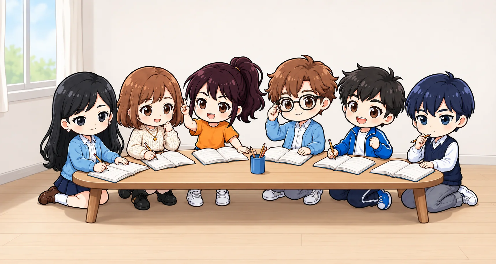

小学校1年〜6年の学び
学びの道すじを、
自分でたどろう。
今の学びを見つけて、前に学んだことや、この先につながることを確かめよう。

さがす
学年と教科から探す
学びの地図の見方学年やつながりは目安です。学習指導要領の解説などをもとに整理した候補で、必ずこの順番で学ぶという意味ではありません。総合的な学習の時間の課題は、各学校で決まります。
項目名・説明・道すじから探せます
道すじ
大きな学びの道すじ
教科ごとに大きな流れをまとめています。教科を開いて、気になる項目から前後のつながりをたどれます。
学びの道すじを読み込んでいます…
一覧
学習内容の一覧
教科や学年を選ぶと、学びのまとまりが表示されます。
学習データを読み込んでいます…
条件に合う学習内容が見つかりません。学年や検索語を変えてみてください。
つながり
この学びで目指すこと
ここが難しいときは？
あてはまるものを選ぶと、戻るとよい学びと、学び直しのじゅんばんが出るよ。
前に学んだこと
今の学びを支える可能性のある内容
この先につながること
この学びを生かしたり、広げたりする内容
関連する学び
考え方や技能がつながる内容
他教科とのつながり
今の学びが、別の教科の学習とどう結び付くかを見てみよう。
つながりは、学びを考えるための候補です。必ずこの順番で学ぶという意味ではありません。